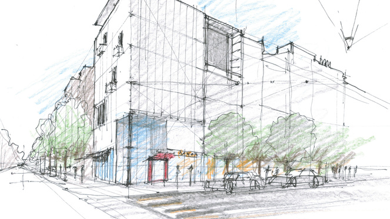
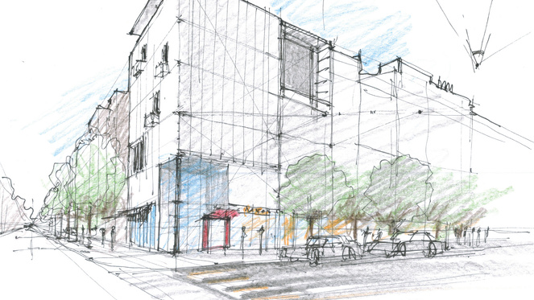

Voici les 4 domaines abordés en enseignement technologique
Energie et Environnement
Architecture et Construction

Systémes d'Information et Numérique
Innovation Technologique et Eco-Conception

Cette page a été réalisée par
Energie et Environnement
Architecture et Construction

Systémes d'Information et Numérique
Innovation Technologique et Eco-Conception